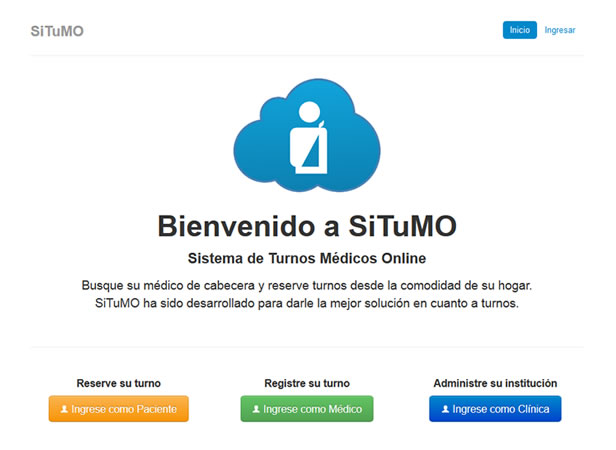
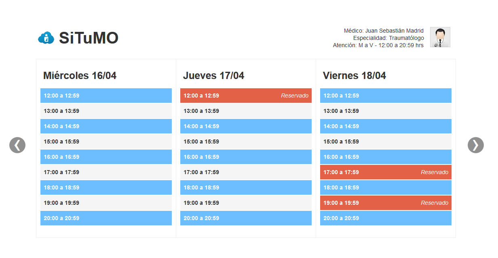
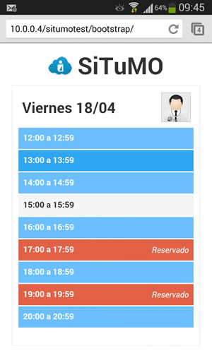
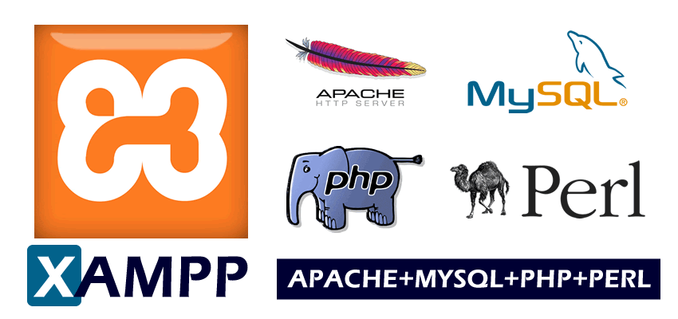
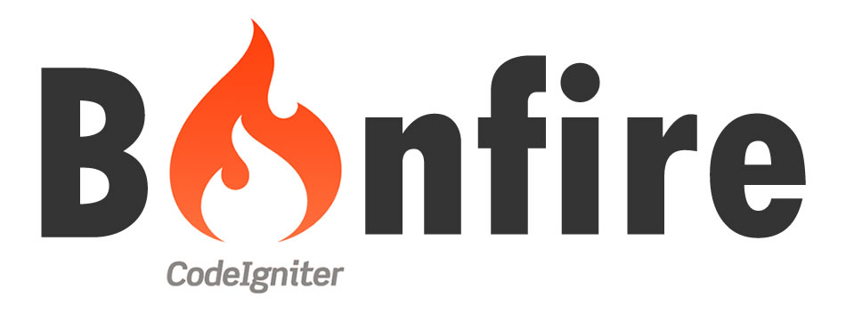
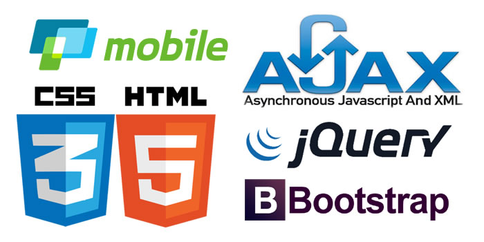

¿De qué vamos a hablar?
Proyecto
basado en la Cooperación para su Desarrollo
Objetivos de la Presentación
- Exponer la filosofía > Cooperativa Informática
- Describir el contexto de desarrollo> SiTuMO Web
- ¿Cómo colaborar? > Plataformas + Herramientas
Nuestra filosofía
Cooperativa Informática
¿Qué es una cooperativa?
“Una cooperativa es una asociación de personas que se han unido voluntariamente para formar una organización democrática cuya administración y gestión debe ser acordada por sus socios.
Su intención es hacer frente a las necesidades y aspiraciones económicas, sociales y culturales comunes a todos
mediante una empresa.”
Wikipedia
¿Por qué una cooperativa?
“El cooperativismo promueve formas de organización
que potencian el trabajo colaborativo y mejora, según nuestro modo de ver, los procesos de desarrollo.
Además somos empresas que nos interesamos por el
desarrollo de la comunidad en la que vivimos.”
tecnomati.co
Principios y valores
Constituyen las reglas básicas de nuestro funcionamiento.
Principios cooperativos
- Libre adhesión.
- Control democrático de los socios.
- Participacion económica de los socios.
- Autonomía e independencia.
- Educación, entrenamiento e información.
- Cooperación entre cooperativas.
- Compromiso con la comunidad.
Valores cooperativos
- Ayuda mutua: trabajar juntos.
- Responsabilidad social.
- Democracia: toma de decisiones colectivas.
- Igualdad tanto en los derechos como en deberes.
- Equidad: justa distribución de los excedentes.
- Solidaridad: apoyarse en los problemas.
- Honestidad y transparencia.
- Esfuerzo propio: dar lo mejor de cada uno.
Cooperativismo y Software Libre
Compartimos el código...
¿Por qué no compartimos
el rédito económico de
trabajar sobre este?
- Dejar de ser meros espectadores del Software Libre.
- Contribuir con nuestra Soberanía Tecnológica.
Contexto de desarrollo
SiTuMO en la Web
Clínicas, hospitales, consultorios
¿Cuál es la Solución?
Disponer la tecnología
para la Salud!!!
Si.Tu.M.O.
Sistema de Turnos Médicos Online
Médicos
- Gestión de Horarios de atención.
- Establecer los días y franjas horarias.
- Establecer licencias y feriados (no laborales).
- Gestión de Turnos de Pacientes.
- Crear cuentas de usuario para sus pacientes.
- Reservar un turno, modificarlo o cancelarlo.
- Imprimir el comprobante del turno.
- Imprimir todos los turnos concedidos para un día.
Médicos
- Gestión del Perfil Médico.
- Establecer las Especialidades Médicas.
- Establecer las Obras Sociales con las que trabaja.
- Configurar los datos relacionados a su cuenta.
- Cargar un Currículum Vitae Profesional.
- Generación de Reportes varios.
- Reportes de cancelación de turnos por Pacientes.
- Estadística sobre la participación de Pacientes.
Pacientes
- Gestión de la Cuenta de Usuario.
- Registrarse con un correo electrónico.
- Configurar los datos relacionados a su cuenta.
- Establecer las Obras Sociales que posee.
- Gestión de Turnos Médicos.
- Buscar Médicos por Nombre y Apellido, Especialidad, Obra Social y Franjas Horarias.
- Reservar un turno, modificar o cancelarlo.
- Imprimir el comprobante del turno médico.
Instituciones
- Gestión de Cuentas de Médicos.
- Gestión de Cuentas de Pacientes.
- Gestión de Horarios de atención.
- Gestión de Turnos de Pacientes.
- Generación de Reportes varios.
Pantalla de Inicio (desktop)

Reserva de Turnos (desktop)

Reserva de Turnos (mobile)

Estado actual del proyecto
- Estructura base: 70%
- Este proyecto para su desarrollo requiere:
- Expertos > Ideas, sugerencias, conocimiento.
- Programadores > Codear y aprender.
- Testers > Con ganas de "romper algunas cosas".
¿Cómo colaborar?
Plataformas y Herramientas
Entorno de Desarrollo Web

Framework de Desarrollo

Tecnologías adicionales

Código fuente y contacto
https://github.com/tecnomatico/SiTuMO
situmo@tecnomati.co
http://cursos.tecnomati.co/situmo
FIN
MUCHAS GRACIAS
www.tecnomati.co